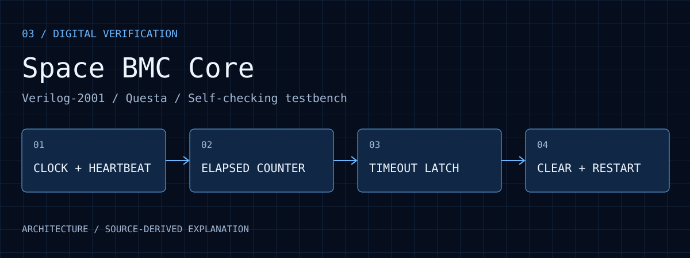

先固定行為契約
明確寫出取樣邊緣與門檻定義，避免對第 N 或 N+1 個週期的不同理解造成 off-by-one 問題。
03 / DIGITAL VERIFICATION
Space BMC Core
參數化 Verilog 心跳監測核心，搭配自動檢查 testbench，將逾時、鎖存、清除與重新計時變成可重複驗證的行為。
查看公開原始碼 ↗
01 / CONTEXT
監測系統必須明確定義多久未收到心跳才算逾時、故障訊號是否保持，以及恢復後何時重新計時。本專案先獨立實作這個基本模組，讓時間邊界能在模擬中逐週期檢查。
02 / WORKFLOW
點選階段，查看資料與控制如何往下傳遞。
heartbeat 與 clear_timeout 在 clk 上升緣取樣；rst_n 為非同步低有效 reset。輸入跨時脈同步需由整合層另行處理。
TIMEOUT_CYCLES 表示連續未取樣到 heartbeat 的上升緣數；預設 25,000,000，在 50 MHz 時脈假設下對應 500 ms。
計數達門檻時將 timeout 設為 1 並保持，不因單純等待而自行清除。
reset、heartbeat 或 clear_timeout 可清除 timeout 並重設計數器；testbench 使用較小門檻加快邊界與重啟檢查。
03 / DECISIONS
明確寫出取樣邊緣與門檻定義，避免對第 N 或 N+1 個週期的不同理解造成 off-by-one 問題。
硬體與測試採用相同 RTL，只改門檻。小參數讓邊界案例容易觀察，但仍需涵蓋不同參數範圍。
目前只產生鎖存的逾時狀態；Recovery FSM、電源重啟及完整 BMC 功能不包含在此里程碑。
04 / EVIDENCE
2026-10-22 使用 Questa 2025.2 重新執行：15 項檢查通過，0 errors、0 warnings。範圍為功能模擬。 執行紀錄
RTL、testbench 與 Questa PowerShell 執行入口均可閱讀，測試入口要求 TEST PASSED 且程序正常結束。
500 ms 是 25,000,000 / 50,000,000 的推導值，不是板上延遲量測。
功能模擬不等於 timing closure、板上穩定性或太空環境驗證；這些需要另行記錄。
05 / REPRODUCE
本頁的互動圖是行為說明，不是模擬器輸出。模組假設同步取樣介面；非同步 heartbeat 需要額外的 CDC 設計。
內容核對日期：2026 年 10 月 22 日；後續更新以 repository 為準。